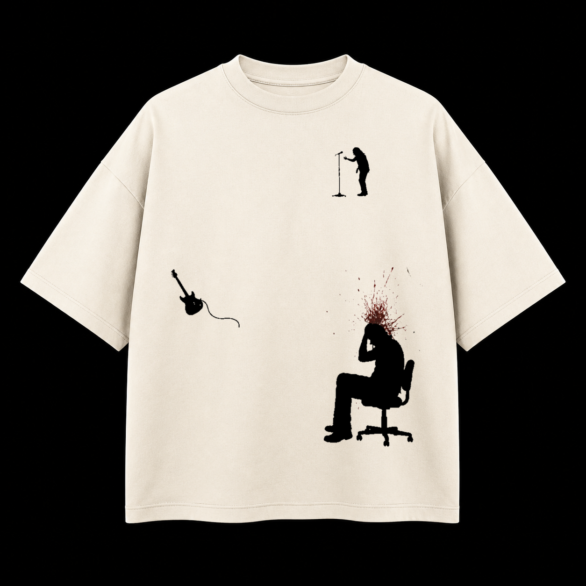
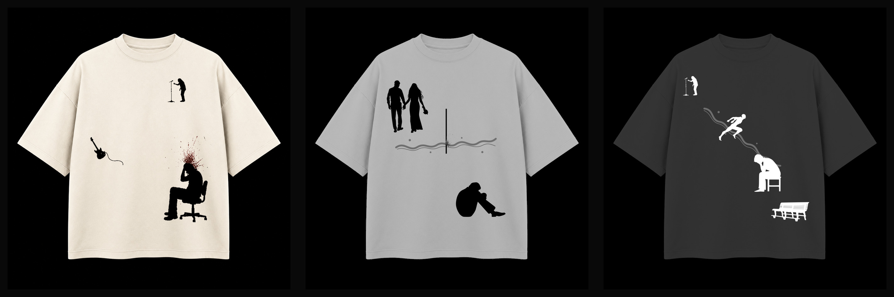
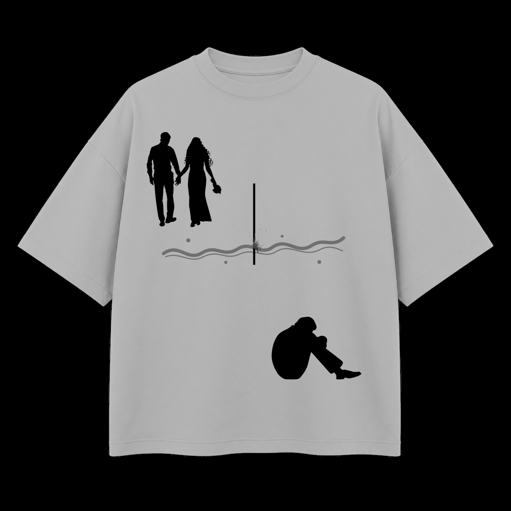
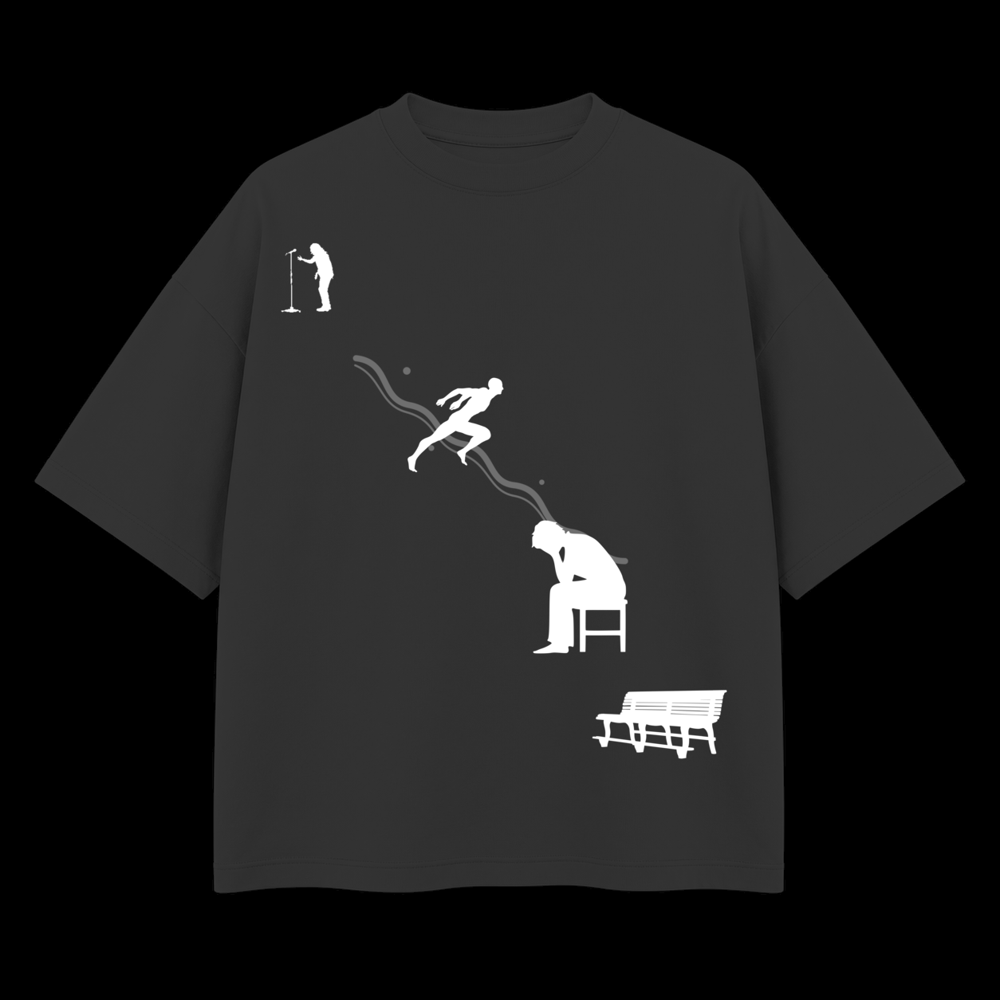

01 / ACT I
EMPTY STAGE
Heavyweight tee / bone
Le micro reste debout, la guitare tombe hors de la scène, le personnage ne repart pas. La peinture rouge n’existe qu’au dernier point du récit.
Trois scènes, une seule chronologie : la performance, la rupture, puis la place vide. Silhouettes franches, composition asymétrique, textile laissé visible et un accent de peinture bordeaux.


Le micro reste debout, la guitare tombe hors de la scène, le personnage ne repart pas. La peinture rouge n’existe qu’au dernier point du récit.

Un souvenir à deux en haut, une présence seule en bas. La ligne rouge traverse le vêtement puis se brise contre une séparation noire.

Quatre temps très espacés : chanter, fuir, attendre, disparaître. Le banc vide ferme la capsule sans texte ni portrait reconnaissable.